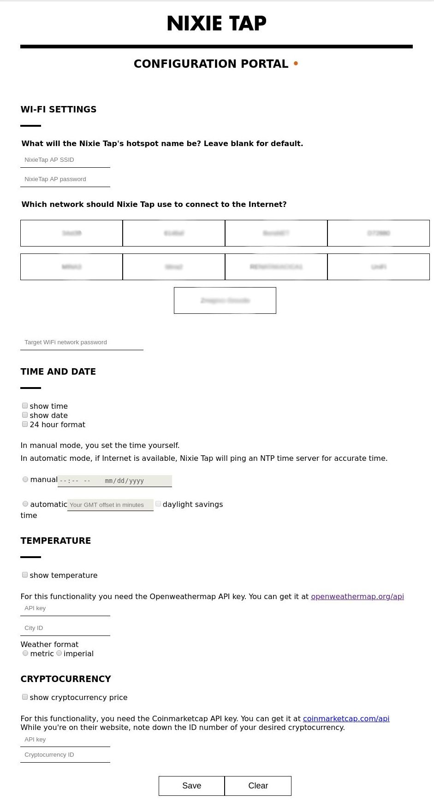
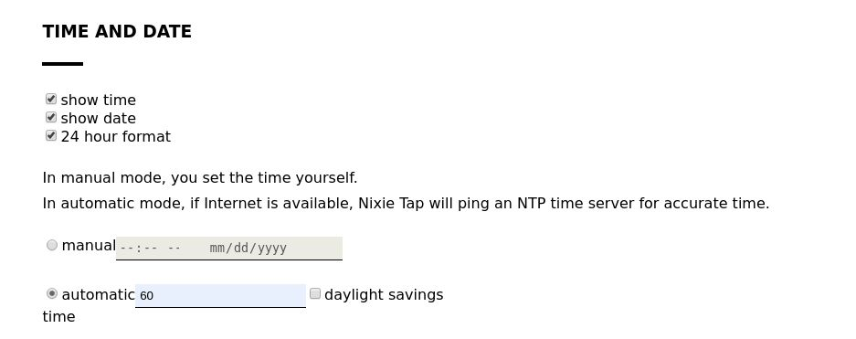

User guide
Main page | Downloads | Kit assembly instructions
Got any feedback? Please write to hello@ this domain.
Last updated: 05.11.2019.
Last updated: 05.11.2019.
Before starting, please make sure that you have the latest firmware! You can find it on the Downloads page.
Nixie Tap relies on third-party service called Openweathermap for its temperature display features. If you want to use this feature, you'll need to go to their website and create free account.
Website is located at openweathermap.org/api, from there you need to get your API KEY and CITY ID. Save these two parameters somewhere, you'll need them for Step 4.
Tip: you can find the CITY ID if you search for your city, and then click on it. URL will have numbers in it, these numbers are the actual CITY ID. For example, Boston MA's URL is openweathermap.org/city/4930956, so its CITY ID is 4930956.
Nixie Tap relies on third-party service called Coinmarketcap for its temperature display features. If you want to use this feature, you'll need to go to their website and create a free account.
Website is located at coinmarketcap.com/api, from there you need to get your API KEY and CURRENCY ID. Save these two parameters somewhere, you'll need them for Step 4.
Press the button at the back of the device. Hotspot mode is now active, and Nixie Tap will wait for you to connect.
Look for a Wi-Fi network called NixieTap. When you connect to it, a captive portal should be served. If not, go to your browser URL bar and type: 192.168.4.1.
You should get something like picture below.
If you wish to keep your device offline-only, you can skip this step.
You can configure all options related to Wi-Fi on the uppermost part of the page.
By default, Nixie Tap access point name and passwords are NixieTap and NixieTap. In the first part, you can change this to whatever you like, keeping in mind that password must be at least 8 characters.
In the second part you can set which Wi-Fi network should be used for data. Click on the desired network, and enter its password.
There are two ways to set time: manual and automatic.
Manual will allow you to set time without needing to go online. Time will be kept via an onboard real-time clock and a precision oscillator. This circuitry will have standby power, so you don't need to adjust time every time you turn of the device.
Automatic mode tells Nixie Tap to ping an NTP server in the background, and apply the desired offset from GMT, as well as the Daylight Savings Time.
Click on show temperature, put API KEY and CITY ID into their respective fields in the Hotspot.
Click on show cryptocurrency price, put API KEY and CURRENCY ID into their respective fields in the Hotspot.
Once you have set up everything, click on Save. Hotspot will disconnect, and, hopefully, your Nixie Tap is ready!
As Nixie Tap keeps accurate time via two sources - NTP and RTC, with NTP being more trustworthy, maybe there is something wrong with your WiFi settings.
Check API key, currency ID and WiFi settings. If everything seems OK, head on to Coinmarketcap website, there you can see what's happening with requests which Nixie Tap sends.
Same as 7.2, only for Openweathermap.
Nixie Tap touch sensor is very sensitive, and may pick up spurious or external electromagnetic fields. If you built the kit, please check Step 5 of the assembly guide. If you cannot solve this, please contact me.
If you want to develop your own firmware, or just want to debug, you should know that Nixie Tap has a serial port built in! Just find it on the correct COM port, with 115200 baud rate.
To make it easier to connect, hold the Nixie Tap button while connecting the USB cable. It will enter into a delay, giving you 3 seconds to open the serial monitor, while showing you the firmware version.
Commands currently supported on the serial port:
init - factory reset, resets all parameters, including WiFi passwordsAll commands expect /n termination.